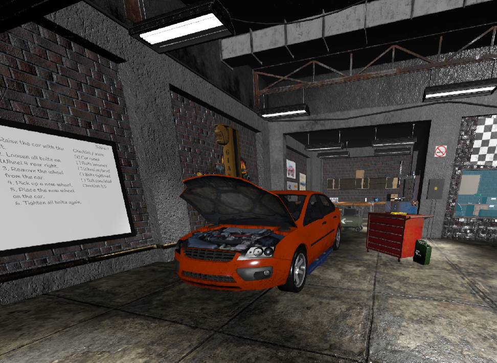

← Back to projects
VR Car mechanic
Overview
Car Mechanic VR is an immersive virtual reality experience where users learn to repair and replace car parts through realistic, interactive tasks. Built in Unity, the project focuses on intuitive VR interactions and hands-on learning.
Interaction mechanics
- Hands-on repair actions with grab, inspect and place interactions
- Unity-based VR controls focused on clarity for new users
- Blender assets integrated into the scene to support the mechanic theme
- XR Interaction Toolkit for the core interaction layer
Design focus
The main goal was usability: every interaction needed to be readable enough that someone could understand the repair flow quickly, while still feeling like a VR task rather than a tutorial.
